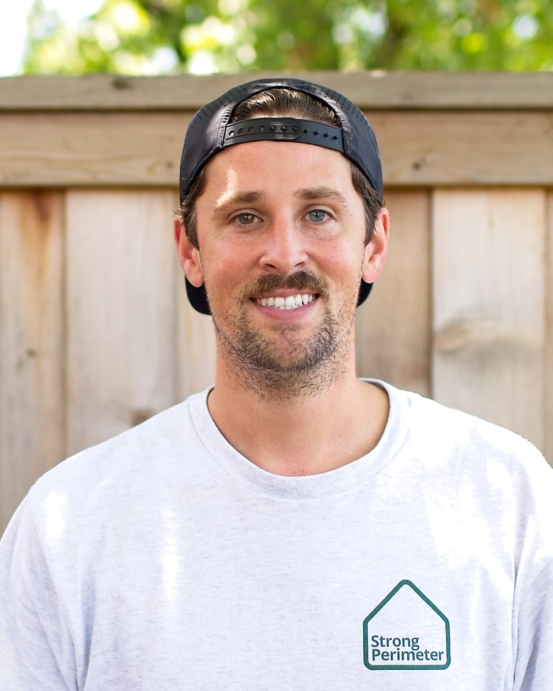
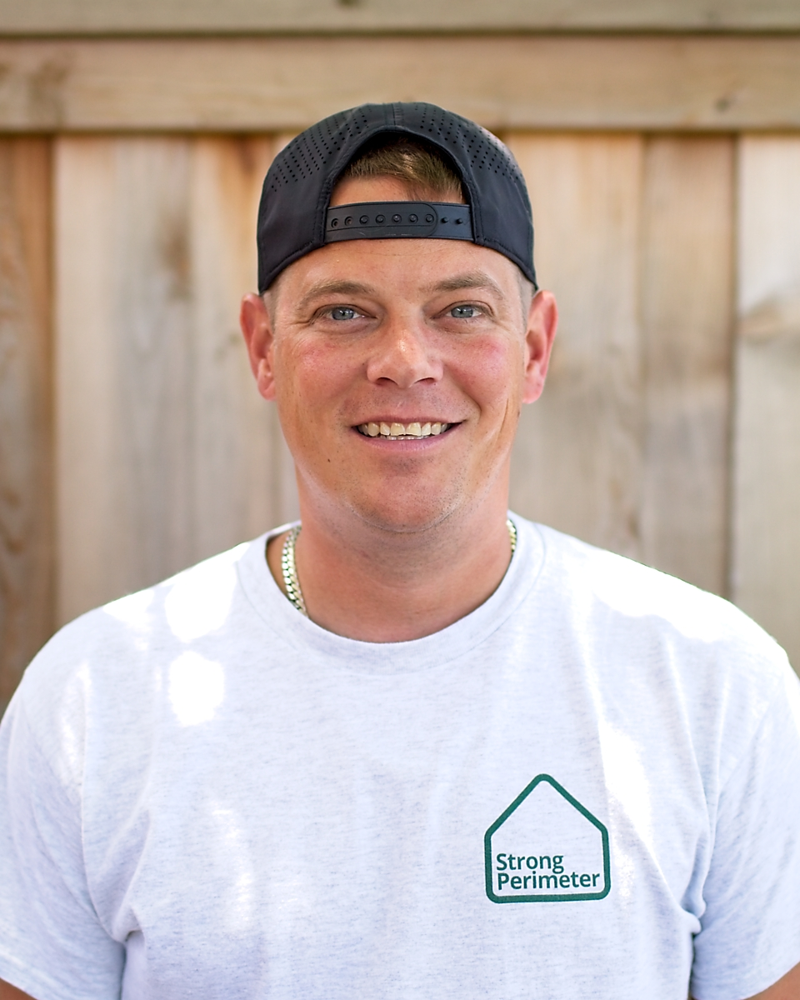
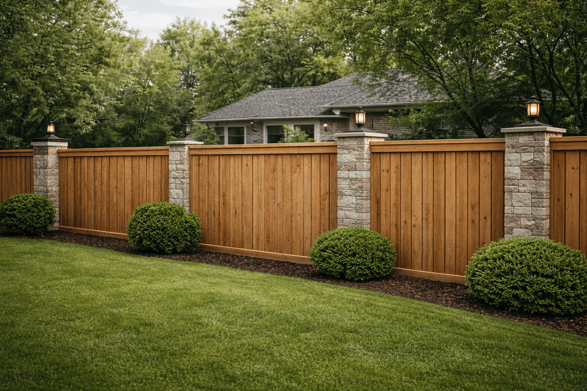
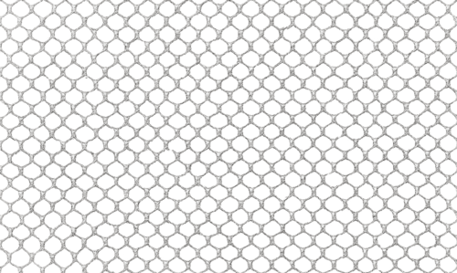
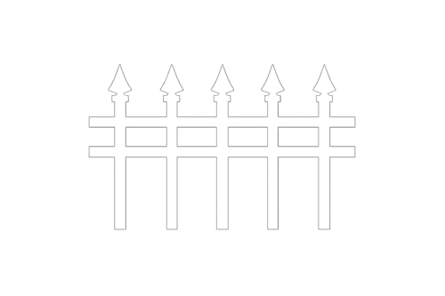

Who you will meet

Daniel Wade
Founder & CEO

Robert Hill
Sales Manager
Jesus Castillo
Crew Lead
People-first fence work across Dallas-Fort Worth
Before we talk posts, pickets, gates, or stain, we listen for the real story: who uses the space, what changed, when it needs to be ready, where the property sits, and why the fence matters.

Who you will meet

Daniel Wade
Founder & CEO

Robert Hill
Sales Manager
Jesus Castillo
Crew Lead
What clients remember
“The crew was incredibly friendly, answered every question, and made the whole project feel easy from start to finish.”
Trust still matters after the handshake

What we do Repair, restore, finish, install, and replace fences without making it confusing When to call Storm damage, rust, pool safety, HOA notes, move-ins, and planned upgrades
Where we work Homes, businesses, pools, lots, alleys, ranch edges, and sites across DFW
Why it matters The fence is the product, but the experience is what people talk aboutWho we are
Strong Perimeter is built around a simple idea: the best fence projects feel clear, respectful, and personal before the first post is set.
The story starts here
Someone needs a safer pool gate, a cleaner backyard, a repaired storm section, a better first impression, or a property line they can stop worrying about.
Homeowners, property managers, business owners, families, pets, guests, crews, and neighbors all experience the fence differently.
Repair what failed, restore what can be saved, build what needs to change, and finish it so it looks cared for.
Storm damage, rust, a move-in, a pool inspection, HOA notes, a pet issue, or a planned upgrade can all start the call.
Backyards, alleys, pools, ranch edges, storefronts, facilities, lots, schools, and managed properties across Dallas-Fort Worth.
Safety, privacy, curb appeal, access, durability, trust, and the relief of knowing the perimeter is handled.
What we do
You do not need to know the perfect scope before you reach out. Tell us what is happening, and we will help sort the right path.
Leaning posts, broken panels, damaged gates, storm sections, rust, fabric, pickets, rails, and hardware.
Repair optionsRestoration combines practical repair with prep, paint, stain, and finish decisions that make the whole line feel maintained.
Restoration optionsNew layouts, privacy upgrades, pool barriers, business perimeters, and replacement sections with clear material guidance.
Install and replacePainting, staining, alignment, gates, access, and cleanup are the details people notice after the crew leaves.
See all servicesCustomer process
Every project has a practical side and a human side. We keep both visible so customers know what is happening and why.
We ask what changed, who uses the space, and what outcome would feel right.
Photos, address, fence type, access, timing, and condition help us understand the real scope.
We explain repair, restoration, replacement, paint, or stain options without rushing the decision.
The crew shows up with the plan, respects the property, and keeps the work moving cleanly.
We close with the details: gates, finish, cleanup, expectations, and the view you live with.
Why Strong Perimeter
A stronger perimeter should come with less stress. That means honest options, clear timing, a respectful crew, and a finished result that feels right for the people who use the space.
What that looks like
You know who you are talking to, what the plan is, and how the fence should look before anyone starts tearing into your yard.
The first conversation starts with what happened and what would make the space feel right again.
Repair, restore, replace, paint, or stain should feel like choices you understand.
Crews, materials, access, cleanup, and communication are part of the work.
The final walkthrough is where the small details become the thing you see every day.
Meet the team
The estimate, the schedule, the crew, and the follow-through all come from real people who care about making the project feel steady.
Founder & CEO
Daniel leads Strong Perimeter with a hands-on focus on quality, finish standards, and the customer experience before, during, and after the work.
Sales Manager
Robert helps homeowners and property managers talk through scope, materials, access, photos, and timing so the next step feels clear instead of rushed.
Crew Lead
Field leadership focused on clean lines, dependable execution, and jobsite care.
Crew Member
Helps keep builds moving smoothly while protecting the details customers see at the end.
Crew Member
Supports repair, install, and finish work with a steady eye for consistency across the fence line.
Gallery and walkthroughs
Photos and videos help customers connect the starting condition, the work performed, and the finished result.
Strong Perimeter combines practical field work with a cleaner customer experience, from the first call through the final walkthrough.
Customer reviews
The reviews point back to the same human things: answers, professionalism, friendly crews, and finished work that feels cared for.
Betty Davis
January 13, 2026
“The crew was incredibly friendly, answered every question, and made the whole project feel easy from start to finish.”
BT C
January 7, 2026
“They repaired old wrought iron, repainted the railings, and helped the whole fence line come out looking amazing.”
Ken Rock
September 11, 2024
“The proposal was prompt, the schedule was clear, and the stain color turned out exactly the way we hoped.”
Eric Babin
March 15, 2025
“They repaired my fence after a wind storm and got the job done in less than a day. Professional from start to finish.”
Donna McDonald
September 20, 2025
“They did what they said in a timely manner, custom iron work looked beautiful, and the crew stayed professional throughout.”
DFW Homeowner
Recent project
“The estimate was straightforward, the crew stayed communicative, and the finished fence instantly upgraded the whole property.”
Request a quote
Tell us what happened, who relies on the fence, where it is, and when you need it done. Photos help, but a plain-English note is enough to start.